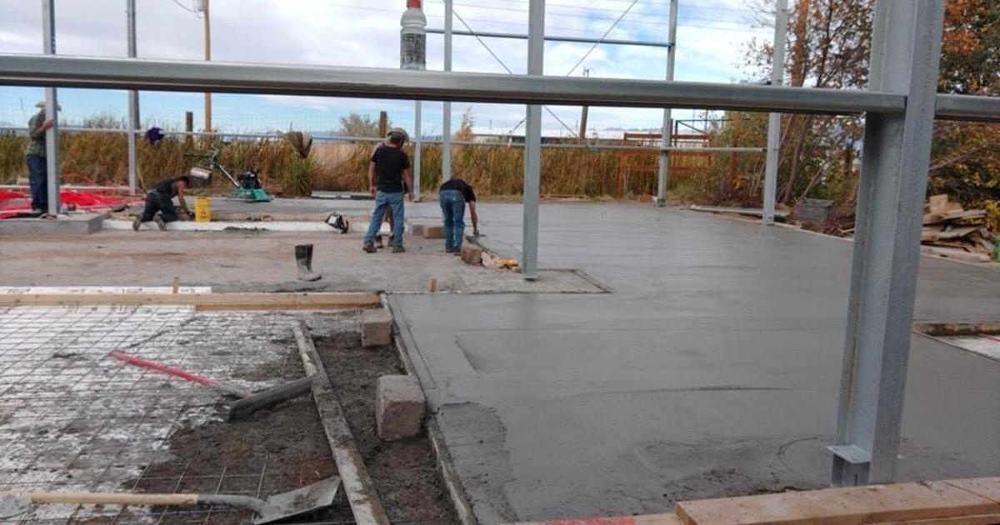

Colorado Gator Farm continues rebuilding process after devastating fireThe Colorado Gator Farm continues to rebuild after a devastating fire destroyed the reptile barn in April. Crews poured a new concrete floor this week. No , but most of the rescue snakes, lizards, tortoises, parrots, and cats died. All alligators and crocodiles outside the building survived, and flames did not spread to the fish building, where fish, turtles, and sharks live. On Wednesday, crews also installed geothermal pipes to heat the floor for the reptiles, according to the organization's Facebook post. The Colorado Gator Farm is located in Mosca, north of Alamosa. They continue to host auctions and fundraising events to help with the rebuilding process. At the time, the Mosca-Hooper Fire Department said the fire did not seem suspicious. for more features. |
 |